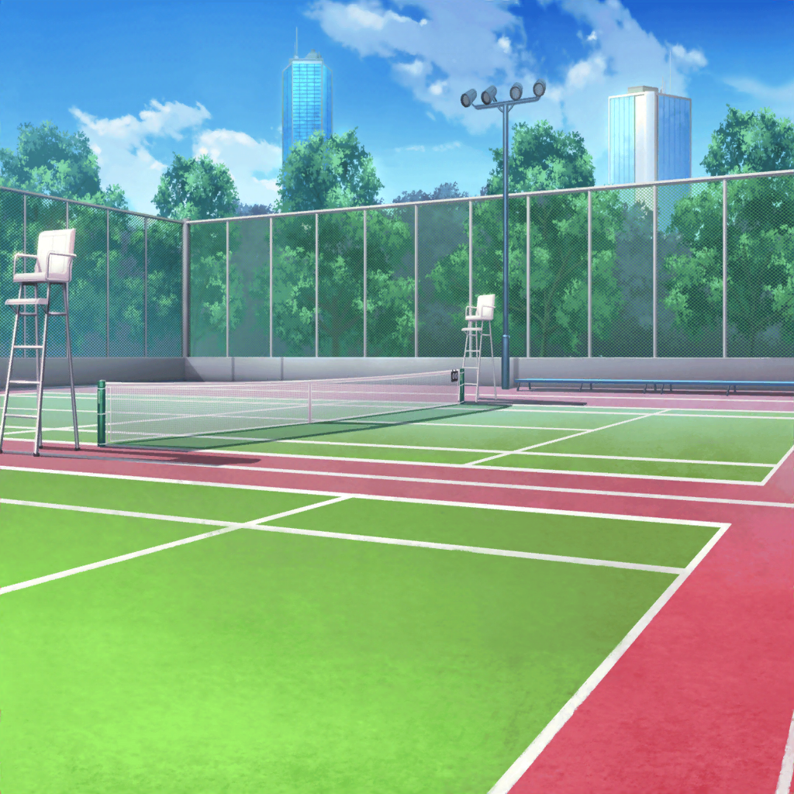
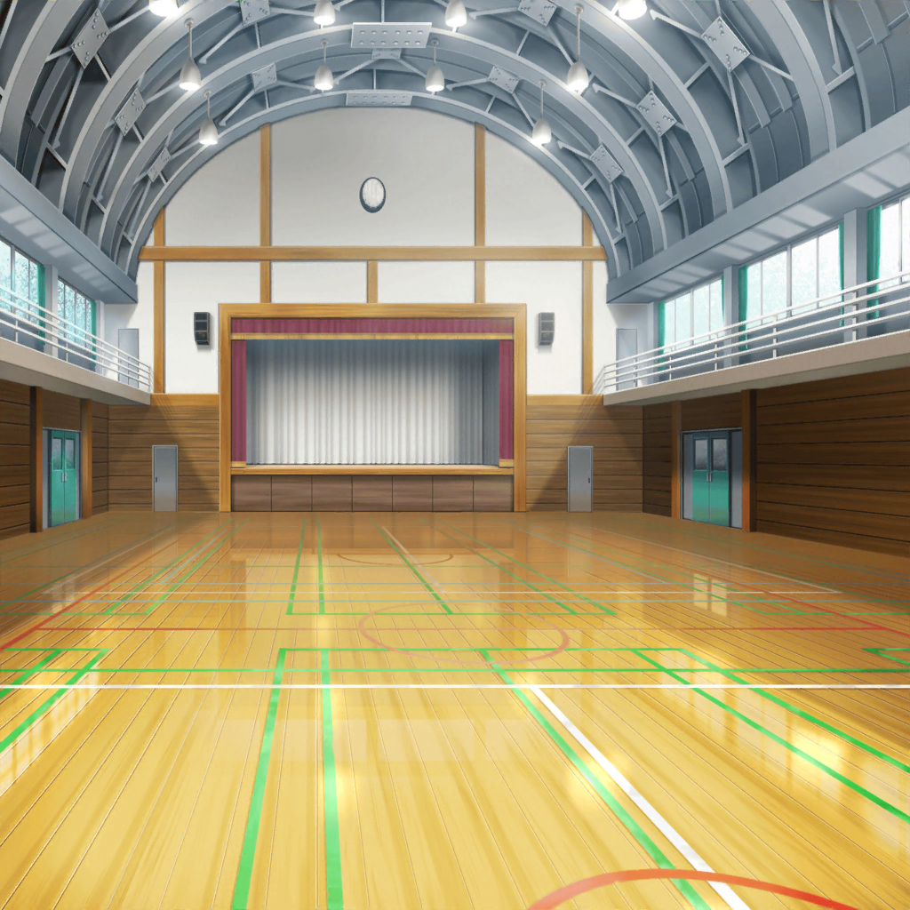

花咲川女子学園 テニスコート
美咲・燐子
はあ……
燐子
奥沢さん。さっきはその……す……すみませんでした……
せっかく……いろいろ教えてくれたのに……
美咲
いやほんと、謝るようなことじゃないですって
美咲
そもそも紗夜先輩がすごすぎるっていうか……いえ、別に
負け惜しみとかじゃないですよ。あたし経験者なのに、
１本も取れなくて悔しいとかぜんぜん思ってませんからっ
燐子
……え……？ は……はい……あの、でも……
わたし、本当に何も出来なくて……一度も……
当てられなかったので……
燐子
やっぱり、わたし、運動は……向いてないのかもしれません……
紗夜
白金さん、そう気を落とさないでください。
運動部はテニス部だけではありませんし……
次の部を見てから判断してもいいと思いますよ
燐子
つ、次……？ まだ……見るんですか……？
紗夜
はい。実は、テニス部に相談をしている時、
偶然剣道部の顧問の先生が通りかかって……
剣道部にもぜひと言ってくださったので
燐子
け……剣道部……
紗夜
剣道部は体験ではなく、見学でお願いしておきましたので、
安心してください
燐子
け……見学だけ……？ それなら、なんとか……
美咲
おおー……鮮やかな手際
花音
うん。紗夜ちゃんって、すっごく頼りになるよね
美咲
ハロハピにも、あれくらい頼りになる人がいれば……
いや、贅沢は言ってられないか。
花音さんがいてくれるだけで、十分助かってるし
花音
あ、あはは……
紗夜
奥沢さん、突然お願いしてしまって、
ありがとうございました
燐子
えっと、あの……あ、ありがとう……ございました
美咲
いえ、とんでもない。燐子先輩。その……
頑張りすぎない程度に、頑張ってくださいね
花音
入りたいって思える部活に出会えるといいね
燐子
は、はい……ありがとうございます……

花咲川女子学園 体育館前
剣道部員
ヤーーーーッ！
紗夜
さすがは剣道部。体育館に入る前から、
勇ましい声が聞こえてきますね
燐子
……っ……な、なんで……
こんなところに……きちゃったのかな……
……今なら……まだ……や、やっぱり……家に…………
イヴ
サヨさん！ リンコさん！
紗夜
！ 若宮さん
イヴ
次はケンドー部の見学なんですね。これは気を引き締めないと！
紗夜
茶道部の次は、剣道部での活動ですか
イヴ
はいっ！ バンドの練習や撮影などもあるのですが、
できる限り、お稽古にも出るようにしているんですっ
紗夜
なるほど。では、部活に出られる日は大忙しですね
イヴ
そうなんです。もう１つ、華道部にも入っているので、
放課後はテンテコマイで！
イヴ
本当は、華道部にもぜひ見学に来てもらいたかったんですが……
残念なことに、今日はお休みなんです
紗夜
そうなんですか。確かに、
若宮さんが花を生ける姿を見られないのは残念ですね
燐子
そ……そんなにたくさん……大変じゃ、ないですか？
イヴ
大丈夫ですっ！ こう見えて、結構パワフルなんですよっ！
それに、どの部でも毎回新しい発見があるので、
とても楽しいんです♪
イヴ
新しいことを学ぶのって、すごくワクワクしませんか？
なんというか、こう……今の自分より、ほんの少しだけ
成長できる感じ、というか
燐子
今の自分より……成長……？
イヴ
はいっ。新しいことを知るということは、
『知らなかった自分』から、『知っている自分』に変わる……
つまり、成長しているってことだと思うんです！
イヴ
この前読んだ本にも書いてありました！
『ほんの少しの変化。その積み重ねが、やがて大きな歴史を創る』
と……人も、きっと同じなんだと思います！
燐子
ほんの少しの……積み重ね……
紗夜
素晴らしい考えだと思います。
日々気を抜かず、尽力するのは大切なことですよね
イヴ
はいっ！ なので、今日も全力です！
じっくりと見ていってくださいっ♪
紗夜
ありがとうございます。
では白金さん……白金さん？
燐子
今の自分より……ほんの少しだけ……
燐子
……
紗夜
白金さん、大丈夫ですか？
体調が優れないなら、剣道部の見学は……
燐子
え……あ、あの……いえ…………大丈夫です
紗夜
そうですか……？ それなら、いいんですけど
燐子
（今……はいって言えば、帰れたのに……
わたし……どうして……）